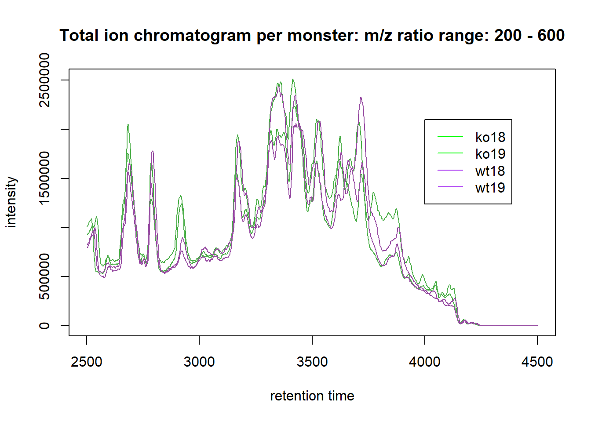
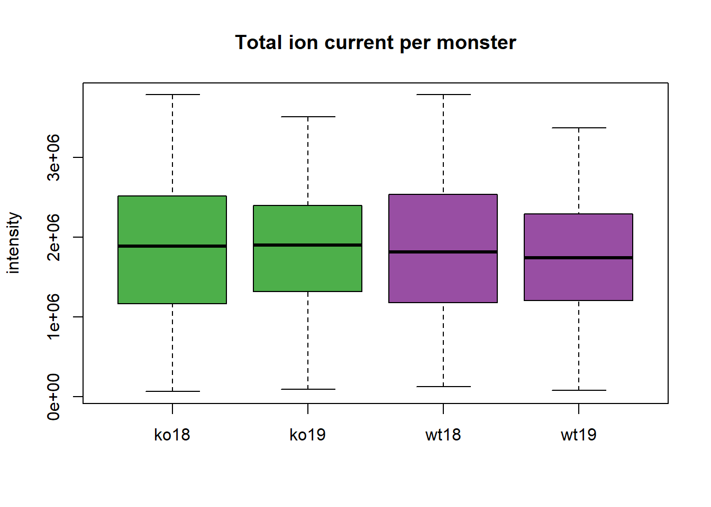

10 Vaardigheid 8: RMarkdowns parameteriseren
Vaak wilt men de parameters binnen een analyse kunnen variëren, zoals de dataset waarop de analyse wordt uitgevoerd. Hieronder laat ik met een voorbeeld zien, dat ik RMarkdown parameterisatie kan gebruiken om soepel te switchen tussen parameters.
10.1 ECDC data nieuwgemelde COVID-19-gevallen en -doden
Gebaseerd op publieke data van de European Center for Disease Prevention and Control (ECDC), heb ik een geparameteriseerd RMarkdown rapport geschreven dat voor een gegeven land en periode per dag het aantal nieuwgemelde COVID-19-gevallen en -doden laat zien.
De te variëren parameters worden aan de YAML header toegevoegd binnen het params veld en ingesteld volgens:
params:
parameter_1: karakter
parameter_2: numerieke waarde
parameter_3: numerieke waarde
In een R chunk wordt een parameter aangehaald met: params$parameter_naam.
Klik hier voor een voorbeeld van het rapport voor Nederland in februari, maart en april 2022. Het is onmogelijk gebleken om parameters toe te voegen aan een gitbook RMarkdown.
Het is onmogelijk gebleken om een numerieke range op te geven als parameter, bijvoorbeeld maand 3 t/m 5. Daarom heb ik besloten om een code te schrijven die voor elke opgegeven maand ook de gevallen en doden van de maand ervoor en erna laat zien.
10.2 Deel 2: …
# Maak een variabele met de paden naar de vier te analyseren files:
cdfs <- dir(system.file("cdf", package = "faahKO"), full.names = TRUE, recursive = TRUE)[c(3, 4, 9, 10)] ## full.names en recursive voor paden i.p.v. bestandsnamen
# Maak een phenodata dataframe:
pd <- data.frame(sample_name = sub(basename(cdfs), pattern = ".CDF", replacement = "", fixed = TRUE), sample_group = c(rep("KO", 2), rep("WT", 2)), stringsAsFactors = FALSE) ## sub() verwijdert .CDF uit naam, stringsAsFactors = FALSE geeft aan dat er geen factors gemaakt moeten worden van de character vectors
pd## sample_name sample_group
## 1 ko18 KO
## 2 ko19 KO
## 3 wt18 WT
## 4 wt19 WT# Laad de ruwe data:
raw_data <- readMSData(files = cdfs, pdata = new("NAnnotatedDataFrame", pd), mode = "onDisk") ## het pdata argument vraagt naar een AnnotatedDataFrame met metadata, onDisk zodat de ruwe data niet opgeslagen wordt in het geheugen (i.v.m. analyse snelheid)
# Onderzoek raw_data:
#View(raw_data)
head(rtime(raw_data))## F1.S0001 F1.S0002 F1.S0003 F1.S0004 F1.S0005 F1.S0006
## 2501.379 2502.944 2504.509 2506.074 2507.639 2509.204#head(intensity(raw_data), 2) ## output te groot
#head(mz(raw_data), 2) ## output te groot
per_file <- split(c( rtime(raw_data), mz(raw_data), intensity(raw_data)), f = fromFile(raw_data))
length(per_file)## [1] 4#View(per_file)
# Verkrijg BPC:
bpis <- chromatogram(raw_data, aggregationFun = "max")
group_colors <- brewer.pal(4, "Set1")[3:4] ## geef KO een groene kleur en WT een paarse kleur
names(group_colors) <- c("KO", "WT")
# Verkrijg TIC:
bpis_2 <- chromatogram(raw_data, aggregationFun = "sum")
# Plot chromatogrammen:
plot(bpis, col = group_colors[raw_data$sample_group], main = "Base peak chromatogram per monster: m/z ratio range: 200 - 600")
legend(4000, 1000000, legend = c("ko18", "ko19", "wt18", "wt19"), lty = 1, col = c(rep("green", 2), rep("purple", 2)))
plot(bpis_2, col = group_colors[raw_data$sample_group], main = "Total ion chromatogram per monster: m/z ratio range: 200 - 600")
legend(4000, 2100000, legend = c("ko18", "ko19", "wt18", "wt19"), lty = 1, col = c(rep("green", 2), rep("purple", 2)))
# Bekijk hoe de ion currents per monster verdeeld zijn:
tc <- split(tic(raw_data), f = fromFile(raw_data)) ## file splitsen op total ion currents per monster
boxplot(tc, col = group_colors[raw_data$sample_group], ylab = "intensity", main = "Total ion current per monster", names = c("ko18", "ko19", "wt18", "wt19"))